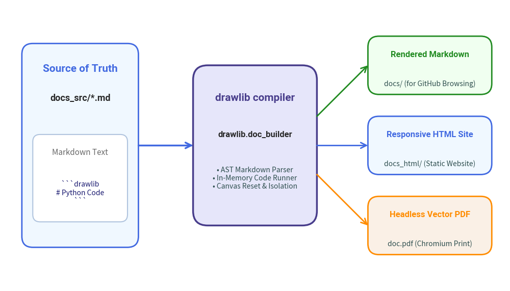

Document Builder Overview
Drawlib follows an "Illustration as Code" and "Documentation as Code" philosophy.
Instead of relying on external documentation engines (such as Sphinx, MkDocs, or Docusaurus) and managing external diagram image assets manually, Drawlib features a built-in documentation compiler: drawlib.doc_builder.
1. Core Principles
- Single Source of Truth: Author your documentation exclusively in standard Markdown (
.md) containing embeddeddrawlibcode blocks. - Zero External Diagram Generators: Drawing scripts are executed natively during compilation, outputting vector-grade PNG, WebP, or SVG graphics.
- Tri-Target Compilation: A single documentation source compiles into three publication targets:
- Rendered Markdown (
docs/): Optimized for GitHub repository browsing. Code blocks become syntax-highlighted Python snippets followed by relative image links. - Static HTML Website (
docs_html/): A responsive documentation website featuring auto-generated sidebar navigation, breadcrumbs, search-ready structure, clean typography, and light/dark theme styling. - Headless Vector PDF (
<name>.pdf): High-fidelity publication-ready PDF documents generated via system Chromium browsers without requiring bulky browser automation frameworks.
- Rendered Markdown (
2. Compilation Targets
| Target Format | Output Location | Primary Use Case | Output Characteristics |
|---|---|---|---|
| HTML | docs_html/ |
Public web hosting (GitHub Pages, Netlify, S3) | Interactive responsive website, sidebar navigation, light/dark themes, collapsible code sections. |
| Markdown | docs/ |
GitHub / GitLab repo browsing | Native Markdown with syntax-highlighted Python blocks and local image references. |
doc.pdf / <name>.pdf |
Offline distribution, print, release manuals | Vector-quality multi-page PDF generated via headless Chromium. |

3. Directory Layout & Workflow
A typical Drawlib documentation project is structured as follows:
my_project/
├── docs_src/ # [SOURCE OF TRUTH] Edit your markdown files here
│ ├── index.md # Main landing page (H1 title becomes site title)
│ ├── navbar.md # Optional navigation hierarchy definition
│ ├── config.py # Global Python configuration script
│ ├── style.css # Custom stylesheet (customizable directly)
│ ├── template.html # Jinja2 HTML layout (customizable directly)
│ ├── build.sh # Project build script
│ ├── guides/ # Topic subdirectories containing .md files
│ └── images/ # Static assets (logos, screenshots)
│
├── docs/ # [GENERATED] Compiled Markdown for GitHub
│ ├── index.md
│ └── *_images/ # Generated illustrations
│
└── docs_html/ # [GENERATED] Compiled static HTML website
├── index.html
├── style.css # Extracted CSS stylesheet
└── *_images/ # Generated illustrations and copied static assets
[!IMPORTANT] The Golden Rule: Never edit files in
docs/ordocs_html/directly. Always author documentation indocs_src/and build using thedrawlib buildCLI command.
4. Next Steps
- Code Block Syntax: Learn how to embed and configure
drawlibcode blocks in Markdown. - Building Documents: Compile your documents using the CLI and Python API.
- Templates & Styling: Customize Jinja2 templates and CSS styling.
- Project Scaffolding: Bootstrap starter projects with
drawlib init.
© 2026 drawlib by Yuichi Ito. Released under the Apache 2.0 License.